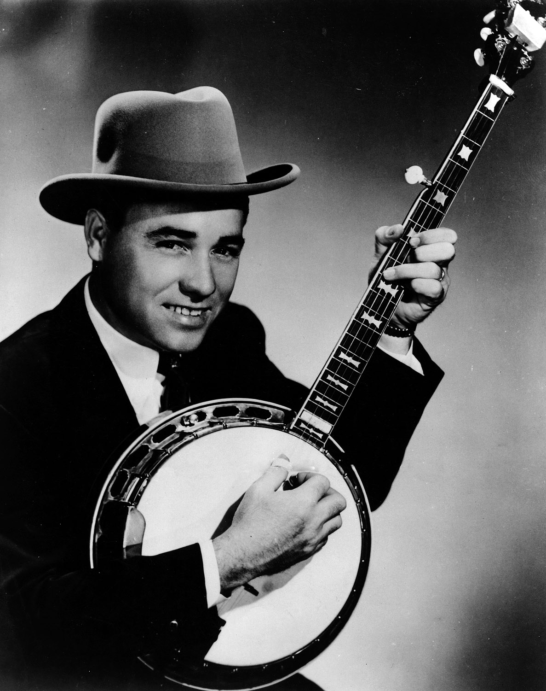

The Banjo is typically a 5-stringed instrument used in Bluegrass music. It can also have four or six strings.
The Banjo is standardly tuned from top to bottom as: G, D, G, B, D.

Earl Scruggs was widely known as the father of the bluegrass style of banjo playing. His three-finger style of playing is commonly known as Scruggs Style.